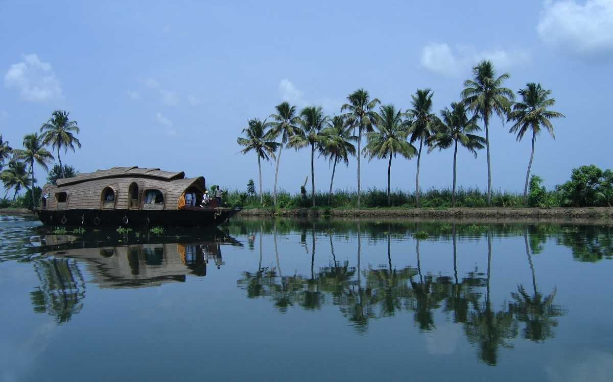
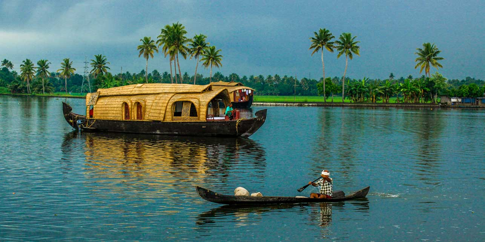

Alappuzha - Backwaters, Beaches and Lagoons - Venice of the East
1. Vembanadu Lake
 The main tourist attraction of Kerala is without a doubt the backwaters. The intricate network of canals and lakes draining the coastal parts of the region all while connecting to the Arabian Sea is famously known as the Kerala Backwaters. The presence of this natural phenomenon coined this region with the name of Venice of the East.
There are many lakes in the Kerala backwaters and out of these the most famous one is the Vembanad Lake also known as the Vembanad Kol or Kayal. It the second largest lagoon in India and the largest water body of the backwaters. The Vembanad Lake is located at the border of the Kottayam and Alappuzha districts. It is one of the most serene locations in and around the whole backwaters region.
The Vembanad Lake is filled with exotic and exquisite natural resources. The flora and fauna of this lake is very lively and it acts as an active ecological hub. The level of the Vembanad Lake is almost at par with the sea level and it is separated from the Sea of Laccadives by a constricted partition. The most attractive thing about the Vembanad Lake is that it is bounded by coastal Forest. The Kumarakom Bird Sanctuary of Kottayam is located by the lake. The boat races of the backwaters known as the Nehru Trophy Race include the Vembanad Lake as a part of its track. The Vembanad is a serene lake which attracts the travelers and for them the house boat rides & stay is a great way to spend quality time amidst nature.
2.Krishnapuram Kottaram

The Krishnapuram Palace is a palace and museum that is located in Kayamkulam, at a distance of 47 km from Alappuzha. This magnificent palace was built during the reign of a Travancore King, Anizham Thirunal Marthanda Varma and is well known for its mural paintings and architecture. The palace is built in the traditional architectural style of Kerala, with a gabled roof, narrow corridors and dormer windows, and is close to the Krishnaswamy Temple at Krishnapuram.
A major attraction of this place is that it houses is one of the biggest mural paintings that can be found in all of Kerala. Known as the 'Gajendra Moksha', this mural painting covers an area of around 53 square feet and has a rich historical value attached to it. The double-edged sword Kayamkulam Vaal can also be found here. The Krishnapuram Palace is currently maintained by the Archaeological Department of Kerala and contains a variety of exhibits that once belonged to the Palace and its former occupant.

3. Backwaters of Alappuzha

One night cruise on the backwaters of the Alappuzha is one of the most popular cruises offered. A round trip, in which you board the boat at Alappuzha and disembark at Alappuzha after having spent the night in the tranquility of the Backwaters.
The cruise takes you through the clear waters of the prominent Punnamada Lake – the venue of the legendary Nehru Trophy Snake Boat Race. You can visit the 400 year old Champakkulam church, one of the 7 churches established by St. Thomas. The Chavara Bhavan, located 6 km from Alleppey , is another interesting place that one can't affoed to miss. The ancestral home of the Blessed Kuriakose Elias Chavara, the Chavara Bhavan houses the legendary 250 year old beacon of light – preserved intact in its original and primitive form.
There are many interesting routes to cruise on the Backwaters of Kerala, each route is more enchanting than the other.
Alappuzha to Alappuzha is a one night round about cruise which takes you through the Legendary Punnamada Lake. Sail along the gentle clear backwaters to the romantic Vattakayal Lake and spend a night aboard.
Alappuzha to Kumarakom, a one night cruise which offers you a magical night. Water birds – both residents and migratory adorn the canals and water ways. The water lilies when seen in the night dazzle like the twinkling stars in a dark sky. Fishing women and men add to the magic with their imaginative ways of fishing.
Alappuzha to Kottayam is one of the most exotic Backwaters cruises. A cruise from Alappuzha through these backwaters tantalizes you with its breathtaking serenity to remain as the most beautiful reminiscences of your life. See the toddy tappers at work and farming done at below sea level.
Alappuzha to Thottappally – a cruise of many historical places. Visit significant places like the Ambalphuzha temple and the Champakkulam Church. The cruise from Alappuzha to Kidangara takes you through the exotic backwaters to the Vembanad Lake and the fascinating Pathiramanal Island.
Alappuzha to Mankotta – this cruise takes you through the Punnamada Lake and provides you the opportunity of visiting the coir making villages and other historically important sights.Alappuzha to Alumkadavu – offers both a one night cruise as well as a two night cruise. This cruise takes you to the place of origin of the house boats you are traveling in – the Kettuvallams. Alumkadavu is the place where entire clans used to make these Kettuvallams.
4. House Boat Ride

The houseboats of Kerala are a new addition to the Kerala's tourism industry. These crafts, measuring up to 120 feet in length, are retrieved from the age of old cargo vessels of the state. Once they ruled the backwaters, poled along by one or two men, heavily loaded with rice, coconut, and other commodities. But in the recent times, these big vessels have been replaced by more modern modes of transport. But like the phoenix it has again rose to the attention of the modern world, with a difference - this time the cargo is comfort and rippling relaxation.
It takes great skill and meticulousness to construct these giant houseboats by tying huge planks of jack wood together. Curiously enough, not a single nail is used in the making of houseboats. There used to be an entire clan of artisans who were involved in the houseboat construction. Today, an innovative holiday idea has restored these majestic representatives of a unique culture and with them their makers.

Modified to meet a novel concept of holidaying, the Kettuvalloms(Houseboats) are comfortably furnished with an open lounge, one or two bath attached bedrooms and a kitchenette, and are extremely eco-friendly, merging smoothly into the panorama. Every houseboat is managed by acrew of 3 men, usually a cook, guide and a oarsman.
5. Alappuzha cuisine

It is said,”What is sauce for the goose may not be sauce for the gander.”Notwithstanding the fact that the taste for food differs across regions, and that different people can have different views about what constitutes delicious and healthy food, yet there are some cuisines that enjoy worldwide recognition and appreciation. Malayaly cuisine is one of them.Especially the cuisine of Alappuzha in central Kerala is what could be described as extremely exotic and relishing. Kerala has been influenced by many culinary methods in past but when you visit the state itself, you will realize how deeply rooted is the traditional Kerala cuisine in the lives of people. Cooking in Kerala is more than just preparation of food. It is a celebration of the rich culture that is deeply imbued in the life of Malayalees.
The cuisine of Alappuzha makes use of quite a few basic ingredients constantly while preparing food. These include rice and coconut. The number of ways in which these two items are used in the Malayaly dishes is hard to even imagine. What makes these dishes so tasty is the inclusion of spices. And here spices do not necessarily mean chillies Spices in Kerala mean much more - a rich use of cinnamon, cardamom, ginger, cloves garlic, cumin, coriander and turmeric. Extensive use of curry leaves and mustard seeds also add a distinct taste to Kerala food.
A melange of aromas resulting from the free use of pepper, cardamom, cloves, turmeric, ginger, chillies, and mustard, used in most curries, fill the kitchens of the well-to-do, but generally the poorer folks content themselves with kanji (rice with water) and take fish with tapioca. Most dishes in Kerala are cooked in coconut oil and are incomplete without a mandatory use of coconut in some form or the other.
Malayalees do not just cook their food, rather they like to cook and serve it in style. In traditional Kerala, there were special utensil made of bronze and brass to cook and serve. Today, much of these utensils have been replaced by more user friendly versions. One of these is chatti which is different for different dishes. As such, there is a cast iron griddle for dosa, shallow cast iron chatti for appam, manchatti (earthernware pot) for fish curry and cheena chatti for preparing pickles and cheena bharanis to store these and tamarind.
A true feast of Kerala items can be enjoyed at the time of sadya, the raditional big feast. Till very recent times, weddings in Kerala were considered grand only if the sadya was grand. The manner in which food is to be served in sadya is also important apart from the dishes that are offered. An improperly laid sadya is indicative of bad or unsophisticated manners. The food is served on a plantain leaf (set in a fixed direction) and that also in a typical manner.